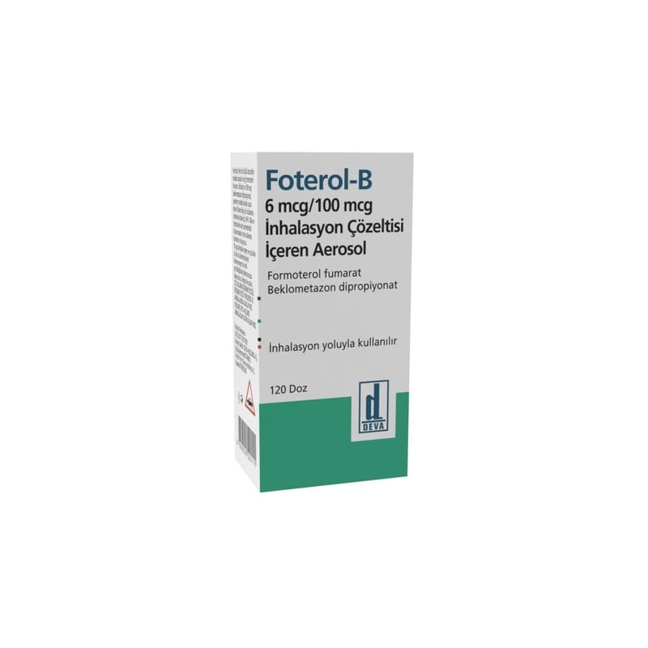

Foterol-B 6 mcg/100 mcg İnhalasyon Çözeltisi İçeren Aerosol, 120 doz

Ne için kullanılır
KT · Bölüm 1FOTEROL-B, ağızdan solunan ve doğrudan akciğerlere aktarılan, iki etkin madde içeren bir basınçlı inhalasyon çözeltisidir.
FOTEROL-B, 1 adet inhaler içeren ambalajlarda kullanıma sunulan inhalatördür. Her bir inhaler 120 aerosol puf’u ihtiva etmektedir.
FOTEROL-B, beklometazon dipropiyonat ve formoterol fumarat olmak üzere iki farklı aktif (etkin) madde içerir.
Birinci etkin madde olan beklometazon dipropiyonat, kortikosteroid adı verilen ve akciğerlerdeki hava yollarının iltihabını/inflamasyonunu gideren bir ilaç grubunun üyesidir ve akciğerlerdeki havayolları duvarında oluşan şişkinlik, hassasiyet ve iltihabı giderir.
İkinci etkin madde olan formoterol fumarat, uzun etkili bronkodilatörler (bronş genişleticileri) olarak adlandırılan ilaç grubu üyesidir ve akciğerlerdeki hava yollarının duvarlarında bulunan kasları gevşeterek genişlemelerini sağlar. Bu iki etkin madde nefes almayı kolaylaştırır. Nefes darlığı, hırıltılı solunum ve öksürük gibi astım belirtilerinin önlenmesine de yardımcı olurlar. Doktorunuz size bu ilacı, astım veya KOAH (uzun süren (kronik), tıkayıcı akciğer hastalığı) hastalığınızın tedavisi için reçete etmiştir.
FOTEROL-B; aşağıda belirtilen hastalıkların tedavisinde kullanılır: - KOAH’lı hastalarda nefes alma sorunlarını önlemek ve bronkodilatasyonu (bronşların genişlemesi) sağlamak, - Astım hastalarında, astım belirtilerini düzeltmek ve kontrol altına almak. Bu amaçla FOTEROL-B astım tedavisinde iki şekilde kullanılabilir;
Nefes darlığı, hırıltılı solunum ve öksürük gibi astım belirtilerinin kontrol altına alınmasını amaçlayan düzenli tedavide veya Nefes darlığı, hırıltılı solunum ve öksürük gibi astım belirtilerinin kötüleşmesinde rahatlatıcı amaçla.